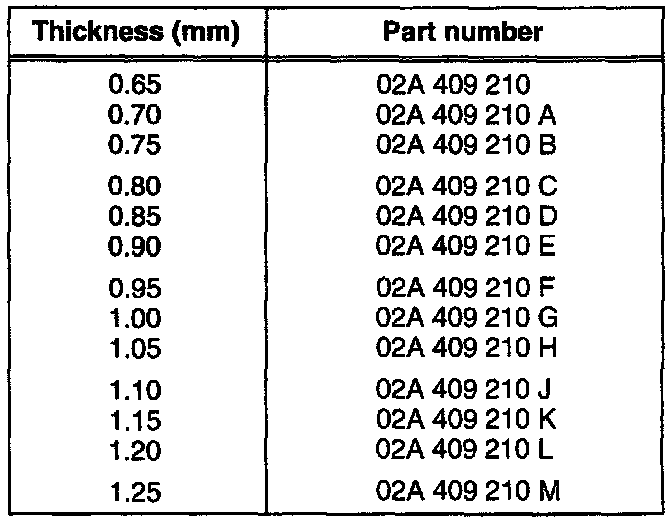

Differential: Adjustments
Adjustment of the differential is necessary if any of the following components is replaced:
^ Transmission housing
^ Clutch housing
^ Differential housing
^ Differential tapered roller bearings
Adjusting
- Press tapered roller bearing outer race into clutch housing without adjustment shim, using 30-205 thrust pad
CAUTION: Tapered roller bearing inner and outer races are a matched pair. DO NOT interchange.
- Press tapered roller bearing outer race into transmission housing without adjustment shim, using 3~205 thrust pad
- Install differential in clutch housing
- Install transmission housing with 5 bolts and tighten
^ Tightening torque: 25 Nm (18 ft lb)

- Install dial indicator with mounting fixtures as shown. Set indicator to zero with 1 mm preload
- Move differential gear up and down, observe and record play on dial indicator
^ Example: measured play = 0.70 mm
CAUTION: Do not rotate the differential while making a measurement, as this will cause the bearings to settle and result in a false measurement
Calculating Adjustment Shim Thickness
The correct shim thickness is selected by adding:
^ specified bearing preload (a constant, 0.40 mm)
^ The measured axial play (example: 0.70 mm)
Example:
^ Add Measured play (example) 0.70 mm
^ Plus Preload (constant) 0.40 mm
^ Required shim thickness = 1.10 mm
- Remove transmission housing
- Pull out bearing outer race or drive out using VW 473 thrust pad
- Install adjustment shims of the correct thickness
NOTE: When using two shims, install thickest shim first.
Available Shims:

CAUTION: Part numbers are for reference only. Check with Parts Department for latest information.
- If required shim thickness exceeds largest shim listed in table use two thinner shims that, when combined, correspond to the required thickness
- Re-install outer race and attach transmission housing

Checking Friction Moment
- A = Commercial torque gauge, 0-600 Ncm (0-54 in lb)
- Lubricate tapered roller bearings with transmission oil and check as shown
Specifications:
^ New bearings: 120-32O Ncm (11-29 in lb)
^ Used bearings: at least 30 Ncm (3 in lb)